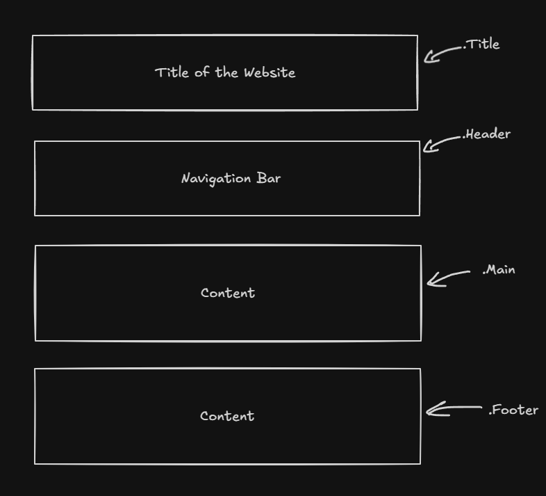

Technical aspect of my website
For this website, 4 Webpages and 1 CSS stylesheet were used during this project which will be outlined below:
| Filename | Title | File Type | Description |
|---|---|---|---|
| index.html | Home | HTML file | This page is used as the home page for my website with some information about me |
| past.html | Past | HTML file | This page talks about my past computing journey |
| future.html | Future | HTML file | This page is about what I plan to do in the future |
| comments.html | Comments | HTML file | This page explains the technical aspect of my website |
| websystem.css | N/A | CSS file | This is used for all the custom css that is applied in the whole website |
Webpage Structure
The framework for this website was split into 4 main parts, each separated by its own div element:a title, header, main content section and a footer. Structuring the page this way kept the HTML organised and made styling more manageable, since each div could be targeted individually in the CSS file without any of the styles bleeding into other sections of the page.Title
This is just the title of the website. This title was done using h1 and was placed in the Title div

Header
All content within the this div is defined under the.header class in the CSS file. This div contains heading of the website and the navigation bar with its respective hyperlink of each button.
main
This is where the main content sits, which also includes the title of the page. All content within this div is defined under the .main class in the CSS file. This section holds the primary content of each page, keeping it visually separated from the header and footer so the layout stays clear and easy to navigateFooter
The footer div was kept very simple. It contained a supplementary navigation bar so the user had a quicker alternative to change pages, along with the name of the subject. The content was split using a spacer between the subject name and the supplementary navigation bar, which allowed for even spacing (this was also used for the navigation bar)Aesthetic
With this website, a minimalistic approach was taken to keep it clean, as adding too much would ruin the aesthetic and usability of the site. A blurred background using.background::before added a nice touch without overdoing it. When it came to font colour and style, Segoe UI was used for the body text, and Times New Roman for the page title. This was chosen because the italic look of the title added some contrast to the minimalistic design and gave it a bit of 'pop'.In terms of interactions, the navigation bar gives the user a physical cue when hovered over, through a transforming underline. This was implemented by having the underline already in place, but invisible, using
scaleX(0). Once the user hovers over a button, the underline animates in using scaleX(1), creating a smooth transition effect